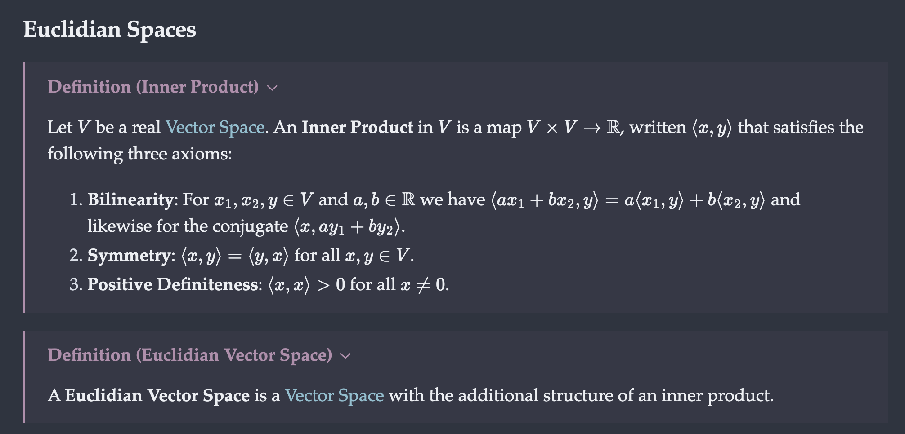

If you’ve ever prepared a document with \(\LaTeX\) before, you know that it can be a long and frustrating process. The language is built to create scientific papers, and it comes equipped to deal with the precise formatting that one would expect from such publications. But the cost of precision is time, and virtually nothing in \(\LaTeX\) is designed to be done quickly. Every command requires the inconveniently located backslash key, and you’ll probably get carpal tunnel from opening and closing the dreaded curly brackets every five keystrokes. To make matters worse, common mathematical symbols are often unreasonably verbose, like \partial, \mathbb{R}, or \leftrightarrow.
However, not all is lost. This article will show you how to transform \(\LaTeX\) from a monolith of confusing commands to a simple, customizable tool for taking notes in math and science classes. To do this, I will be using the personal knowledge management software Obsidian. Using this technique, I have taught myself to typeset mathematics faster than I can write. I have produced hundreds of typeset notes that look like the image below during class. By using pandoc to export my markdown files to PDF, I have also made typesetting written assignments significantly faster. If any of this sounds interesting to you, keep reading. I promise this is useful stuff.

The Solution
In 2019, the late Gilles Castel published an excellent blog post about taking notes using \(\LaTeX\) and Vim. Instead of typing the commands by hand, he used a snippet program to autocomplete them as he typed. If you’re familiar with configuring Vim and want to try this, the original article is here. A more detailed guide, written by Elijian Mastnak, can be found here.
However, learning Vim and managing a bunch of dotfiles can be exhausting. For the less technically inclined, there’s the Obsidian LaTeX Suite, which provides snippet functionality within Obsidian. It can be installed using the following steps:
- Open the settings menu in Obsidian
- Go to the community plugins tab and make sure that “Restricted Mode” is off.
- Click “Browse”, then search for, install, and enable the Obsidian \(\LaTeX\) Suite.
To check that it was installed correctly, open a new note and type mk. If the text is automatically replaced with $$, then the plugin is working.
Writing Snippets
For a more thorough introduction to writing snippets, I recommend you read the documentation. To create and remove snippets, open the Obsidian settings menu, then click on the “\(\LaTeX\) Suite” tab under “Community Plugins”. In this, tab you should see a list of snippets that looks like this:
{trigger: "...", replacement: "...", options: "..."}trigger is the series of keystrokes that will activate the snippet. The snippets are smart–autocomplete will replace the longest active snippet. As an example, suppose you had two snippets with triggers psb and sb. If you were to type in psb, the autocomplete will recognize this as the first snippet and replace it properly, ignoring the fact that the sb snippet is also defined. This is useful because it allows for some overlap in your snippets. But be careful, if the two snippets were sb and sbp, the second snippet would never activate.
replacement is the text that will be substituted in place of the trigger. If you’re writing \(\LaTeX\), remember to escape backslashes by writing \\ instead of \. You can also add a line break with \n. The replacement can contain any number of tab stops, which are included using the characters $0, $1, etc. Upon snippet activation, the cursor will be moved to the first tab stop.
options is a string of characters that contains the settings:
mstands for “math mode”. If this setting is enabled, the snippet will only activate in math mode (both inline and display).Astands for “autocomplete”. If this setting is enabled, the trigger will be replaced immediately. Otherwise, you will have to pressTABin order to activate the snippet.
As an example, here is a simple snippet that replaces ff with \frac command:
{
trigger: "ff",
replacement: "\\frac{$0}{$1}",
options: "mA"
}- Note that we use escape the backslash character using
\\. - Upon snippet activation, the cursor will move to the
$0tab stop. If you press tab again, it will move to the$1tab stop. "mA"means the snippet will activate automatically in math mode.
Building a System
Now, go to back to the settings menu, and delete all the default snippets. If you want to remember your snippets and build a system that works for you, I would highly recommend writing them yourself. Of course, feel free to check the default snippets for ideas, many of them are very good. Here is some general advice on writing snippets:
- Every snippet should autocomplete using the
"A"option. - Snippets should be 2 or 3 characters long, 4 at the most.
- Snippets should not use groups of letters that are commonly used in mathematical expressions. For example, an autocompleting snippet with the trigger
dxwill frequently activate when you don’t want it to. - Use capital letters and special characters to differentiate snippets. That being said, you should try to keep your snippets as fast as possible. Using inaccessible keys like
|or~in your snippets will slow you down. - Only create snippets when you need them. Remember that every additional snippet creates more possibilities for errors.
My Snippets
As I mentioned above, I highly recommend creating your own snippets. That being said, I will begrudgingly share what I’ve been using below to you get started.
Environments:
{
trigger: "cases",
replacement: "\\begin{cases}\n$0\n\\end{cases}",
options: "mA"
},
{
trigger: "align",
replacement: "\\begin{align}\n$0\n\\end{align}",
options:"mA"
},
{
trigger: "eqn",
replacement: "\\begin{equation}\n$0\n\tag{$1}\\end{equation}",
options: "mA"
}Trigonometric Functions:
{trigger: "sin", replacement: "\\sin ", options: "mA"},
{trigger: "cos", replacement: "\\cos ", options: "mA"},
{trigger: "tan", replacement: "\\tan ", options: "mA"},
{trigger: "hsin", replacement: "\\sinh ", options: "mA"},
{trigger: "hcos", replacement: "\\cosh ", options: "mA"},
{trigger: "htan", replacement: "\\tanh ", options: "mA"},
{trigger: "asin", replacement: "\\arcsin ", options: "mA"},
{trigger: "acos", replacement: "\\arccos ", options: "mA"},
{trigger: "atan", replacement: "\\arctan ", options: "mA"},Brackets:
{trigger: "…", replacement: "\\dots", options: "mA"},
{trigger: "_", replacement: "_{$0}$1", options: "mA"},
{trigger: "(", replacement: "($0)$1", options: "mA"},
{trigger: "[", replacement: "[$0]$1", options: "mA"},
{trigger: "|", replacement: "|$0|$1", options: "mA"},
{trigger: "lr(", replacement: "\\left( $0 \\right) $1", options: "mA"},
{trigger: "lr[", replacement: "\\left[ $0 \\right] $1", options: "mA"},
{trigger: "lr|", replacement: "\\left| $0 \\right| $1", options: "mA"},
{trigger: "ang", replacement: "\\langle $0 \\rangle $1", options: "mA"},
{trigger: "set", replacement: "\\{ $0 \\} $1", options: "mA"},Greek Letters:
{trigger: ";a", replacement: "\\alpha ", options: "mA"},
{trigger: ";b", replacement: "\\beta ", options: "mA"},
{trigger: "chi", replacement: "\\chi ", options: "mA"},
{trigger: ";g", replacement: "\\gamma ", options: "mA"},
{trigger: ";G", replacement: "\\Gamma ", options: "mA"},
{trigger: ";d", replacement: "\\delta ", options: "mA"},
{trigger: ";D", replacement: "\\Delta ", options: "mA"},
{trigger: ";e", replacement: "\\epsilon ", options: "mA"},
{trigger: ";z", replacement: "\\zeta ", options: "mA"},
{trigger: ";t", replacement: "\\theta ", options: "mA"},
{trigger: ";T", replacement: "\\Theta ", options: "mA"},
{trigger: ";k", replacement: "\\kappa ", options: "mA"},
{trigger: ";l", replacement: "\\lambda ", options: "mA"},
{trigger: ";L", replacement: "\\Lambda ", options: "mA"},
{trigger: "nu", replacement: "\\nu", options: "mA"},
{trigger: "mu", replacement: "\\mu ", options: "mA"},
{trigger: "rho", replacement: "\\rho ", options: "mA"},
{trigger: ";s", replacement: "\\sigma ", options: "mA"},
{trigger: ";S", replacement: "\\Sigma ", options: "mA"},
{trigger: ";o", replacement: "\\omega ", options: "mA"},
{trigger: ";O", replacement: "\\Omega ", options: "mA"},
{trigger: "pi", replacement: "\\pi ", options: "mA"},
{trigger: "Pi", replacement: "\\Pi ", options: "mA"},
{trigger: "phi", replacement: "\\phi ", options: "mA"},
{trigger: "Phi", replacement: "\\Phi ", options: "mA"},
{trigger: "psi", replacement: "\\psi ", options: "mA"},
{trigger: "Psi", replacement: "\\Psi ", options: "mA"},
{trigger: "tau", replacement: "\\tau ", options: "mA"},
{trigger: "xi", replacement: "\\xi", options: "mA"},Precalculus:
{trigger: "sr", replacement: "^{2}", options: "mA"},
{trigger: "cb", replacement: "^{3}", options: "mA"},
{trigger: "rd", replacement: "^{ $0 }$1", options: "mA"},
{trigger: "sq", replacement: "\\sqrt{ $0 }$1", options: "mA"},
{trigger: "ee", replacement: "e^{ $0 }$1", options: "mA"},
{trigger: "ep", replacement: "\\exp", options: "mA"},
{trigger: "ff", replacement: "\\frac{ $0 }{ $1 }$2", options: "mA"},
{trigger: "pm", replacement: "\\pm", options: "mA"},
{trigger: "oo", replacement: "\\infty", options: "mA"},
{trigger: "neq", replacement: "\\neq", options: "mA"},
{trigger: "geq", replacement: "\\geq", options: "mA"},
{trigger: "leq", replacement: "\\leq", options: "mA"},
{trigger: "ln", replacement: "\\ln", options: "mA"},
{trigger: "log", replacement: "\\log", options: "mA"},Linear Algebra:
{trigger: "tm", replacement: "\\times", options: "mA"},
{trigger: "dot", replacement: "\\cdot", options: "mA"},
{trigger: "vec", replacement: "\\mathbf{$0}$1", options: "mA"},
{trigger: "perp", replacement: "\\perp", options: "mA"},
{trigger: "para", replacement: "\\parallel", options: "mA"},
{trigger: "nrm", replacement: "\\left\\lVert $0 \\right\\rVert $1", options: "mA"},
{trigger: ":i", replacement: "\\mathbf{i}", options: "mA"},
{trigger: ":j", replacement: "\\mathbf{j}", options: "mA"},
{trigger: ":k", replacement: "\\mathbf{k}", options: "mA"},
{trigger: "hat", replacement: "\\hat{$0}$1", options: "mA"},
{
trigger: "vmtx",
replacement: "\\begin{vmatrix}\n$0\n\\end{vmatrix}",
options: "mA"
},
{
trigger: "mtx",
replacement:
"\\begin{pmatrix}\n$0\n\\end{pmatrix}",
options: "mA"
},
{
trigger: "aug",
replacement: "\\left[\\begin{array{$0|c}\n$1\n\\end{array}\\right]",
options: "mA"
},Calculus:
{trigger: "sum", replacement: "\\sum", options: "mA"},
{trigger: "lim", replacement: "\\lim_{$0 \\to $1}$2", options: "mA"},
{trigger: "par", replacement: "\\frac{\\partial $0}{\\partial $1}$2", options: "mA"},
{trigger: "int", replacement: "\\int $0 \\, d$1", options: "mA"},
{trigger: "oint", replacement: "\\oint $0 \\, d$1", options: "mA"},
{trigger: "iint", replacement: "\\iint", options: "mA"},
{trigger: "iiint", replacement: "\\iiint", options: "mA"},
{trigger: "@", replacement: "\\Bigg|_{$0}^{$1}", options: "mA"},
{trigger: "nb", replacement: "\\nabla", options: "mA"},
{trigger: "LL", replacement: "\\mathcal{L}", options: "mA"},
{trigger: "hess", replacement: "\\mathscr{H}", options: "mA"},Logic and Set Theory:
{trigger: "and", replacement: "\\land", options: "mA"},
{trigger: "orr", replacement: "\\lor", options: "mA"},
{trigger: "not", replacement: "\\lnot", options: "mA"},
{trigger: "iff", replacement: "\\leftrightarrow", options: "mA"},
{trigger: "->", replacement: "\\rightarrow", options: "mA"},
{trigger: "mod", replacement: "\\bmod", options: "mA"},
{trigger: "==", replacement: "\\equiv", options: "mA"},
{trigger: "cmp", replacement: "\\circ", options: "mA"},
{trigger: "tf", replacement: "\\therefore", options: "mA"},
{trigger: "apx", replacement: "\\approx", options: "mA"},
{trigger: "fa", replacement: "\\forall", options: "mA"},
{trigger: "ex", replacement: "\\exists", options: "mA"},
{trigger: "nex", replacement: "\\nexists", options: "mA"},
{trigger: "inn", replacement: "\\in", options: "mA"},
{trigger: "nin", replacement: "\\notin", options: "mA"},
{trigger: "psb", replacement: "\\subset", options: "mA"},
{trigger: "nsb", replacement: "\\not\\subset", options: "mA"},
{trigger: "sb", replacement: "\\subseteq", options: "mA"},
{trigger: "stu", replacement: "\\cup", options: "mA"},
{trigger: "sti", replacement: "\\cap", options: "mA"},
{trigger: "bsu", replacement: "\\bigcup", options: "mA"},
{trigger: "bsi", replacement: "\\bigcap", options: "mA"},
{trigger: "prd", replacement: "\\prod", options: "mA"},
{trigger: "std", replacement: "\\setminus", options: "mA"},
{trigger: "stc", replacement: "^{\\complement}", options: "mA"},
{trigger: "ets", replacement: "\\emptyset", options: "mA"},
{trigger: "=>", replacement: "\\Rightarrow", options: "mA"},
{trigger: "<=>", replacement: "\\Leftrightarrow", options: "mA"},
{trigger: "bar", replacement: "\\overline{$0}$1", options: "mA"},
{trigger: "qed", replacement: "\\blacksquare", options: "mA"},Number Systems:
{trigger: "CC", replacement: "\\mathbb{C}", options: "mA"},
{trigger: "RR", replacement: "\\mathbb{R}", options: "mA"},
{trigger: "ZZ", replacement: "\\mathbb{Z}", options: "mA"},
{trigger: "NN", replacement: "\\mathbb{N}", options: "mA"},
{trigger: "QQ", replacement: "\\mathbb{Q}", options: "mA"},
{trigger: "FF", replacement: "\\mathbb{F}", options: "mA"},